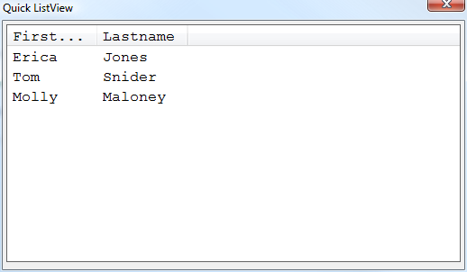

Xdialog Simplified ListView Syntax Fonts
The simplified syntax for the ListView control in Xdialog (first introduced in V10), now supports the standard Xdialog {font} command.dim list as c list = <<%txt% {data=1}Erica|Jones {data=2}Tom|Snider {data=3}Molly|Maloney %txt% ui_dlg_box("Quick ListView",<<%dlg% {FONT=COURIER NEW,12} [%M;K%.100,20id^"Firstname|Lastname"list!idchange]; %dlg%,<<%code% if a_dlg_button = "idchange" then a_dlg_button = "" ui_msg_box("Note","User clicked on : " + id ) end if %code%)
